The Missing Fleet Manual · Overnight visual production
Part VI: visual review
11 candidates, prepared for the final manual-wide review. Fleet is the product, company, or server; host groups are lowercase fleet/fleets. Published chapter prose and artwork remain in place.
All parts · Full chapter briefs
Default: 720 px
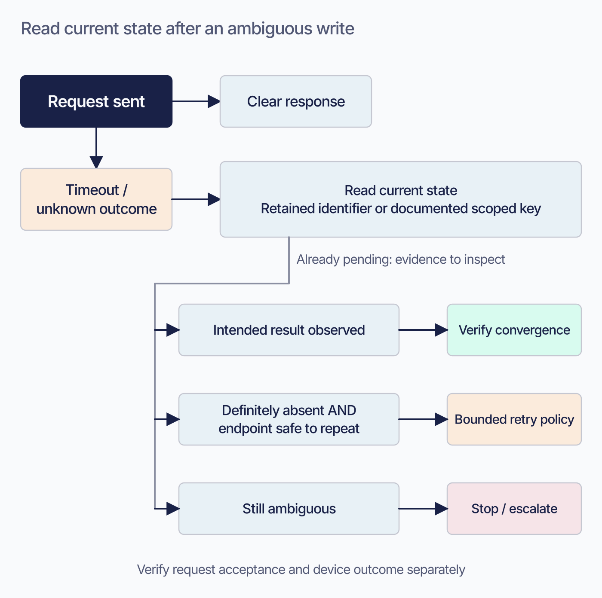
Proposed 2026-09-08; editorial brief, not technical re-verification. Replace the read-then-decide explanation with a short recovery recipe. Preserve identifier contracts, per-endpoint distinctions, and concrete convergence-evidence examples. Keep current prose and this TODO until the actual image is reviewed. Then check alt text against the artwork and retain an accessible summary plus all required technical qualifications.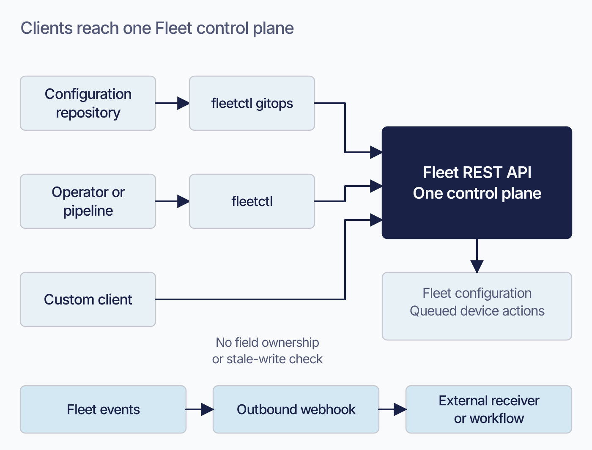
Replacement candidate; compare with the current image before acceptance.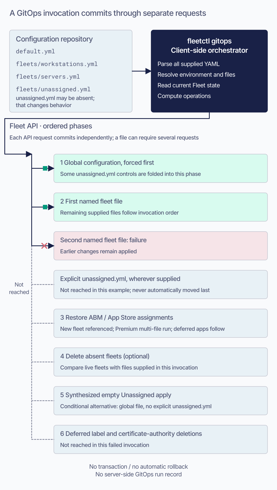
Candidate remains pending the final manual-wide review. Preserve the chapter’s technical qualifications and prose until artwork is accepted.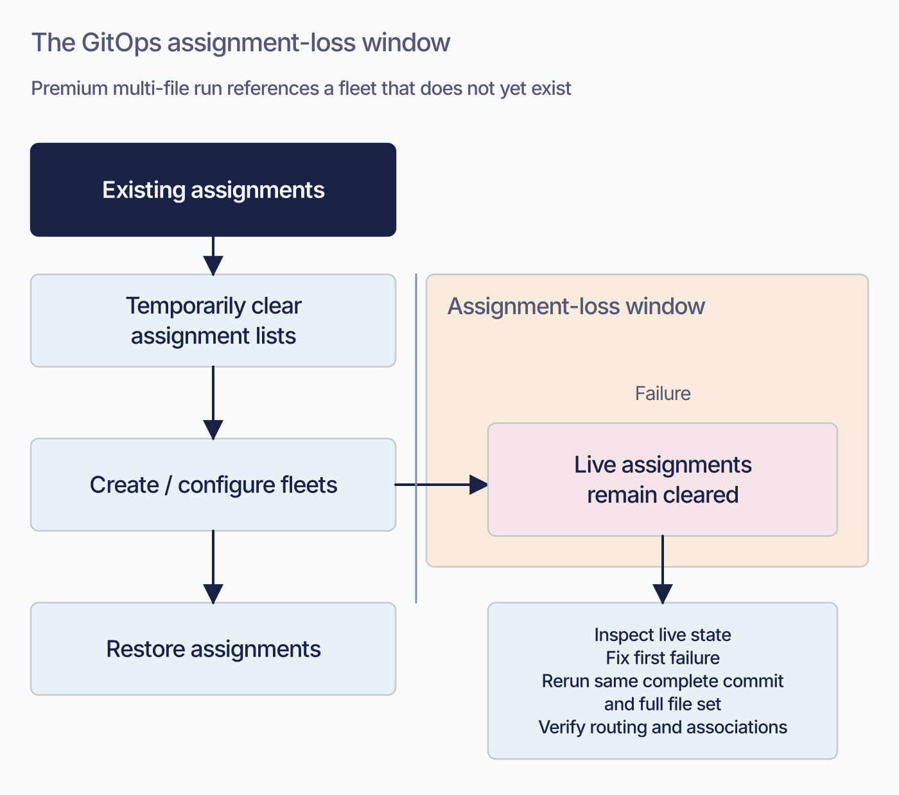
Proposed 2026-09-08; editorial brief, not technical re-verification. Replace the assignment-loss mechanism paragraph and shorten the recovery narrative. Keep the complete ordered recovery steps, concurrency control, and deferred-deletion verification requirements. Keep current prose and this TODO until the actual image is reviewed. Then check alt text against the artwork and retain an accessible summary plus all required technical qualifications.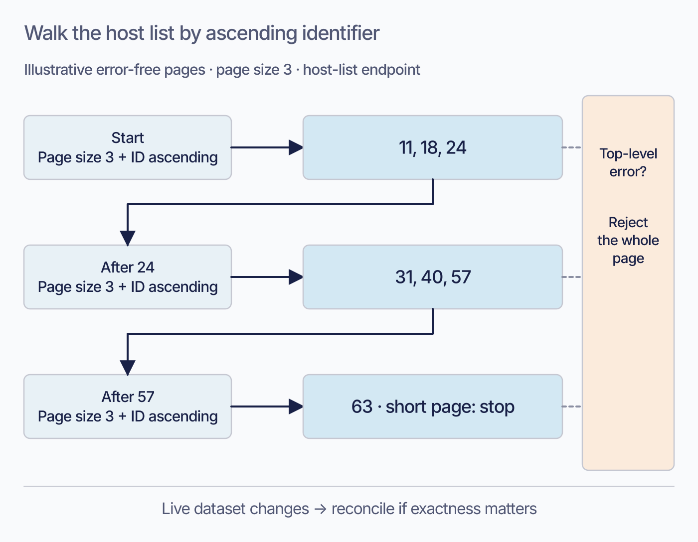
Proposed 2026-09-08; editorial brief, not technical re-verification. Replace the host traversal prose with a concise algorithm and this worked example. Retain endpoint-specific defaults, filter validation, and concurrent-change qualifications. Keep current prose and this TODO until the actual image is reviewed. Then check alt text against the artwork and retain an accessible summary plus all required technical qualifications.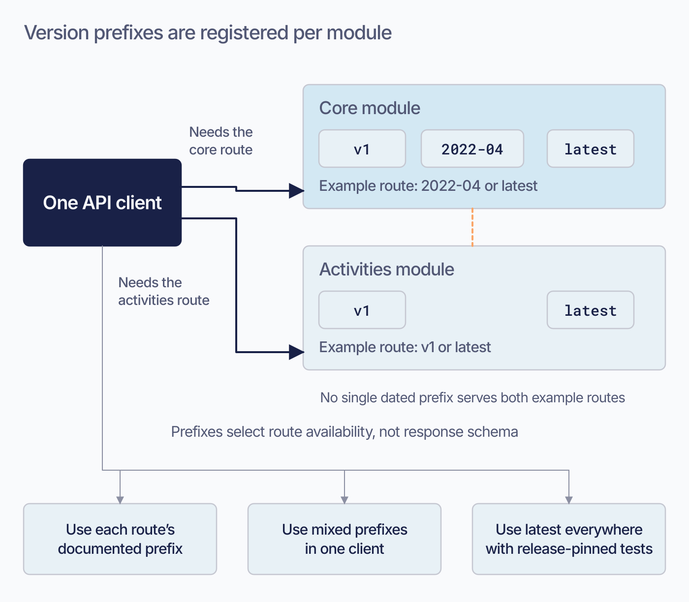
Candidate remains pending the final manual-wide review. Preserve the chapter’s technical qualifications and prose until artwork is accepted.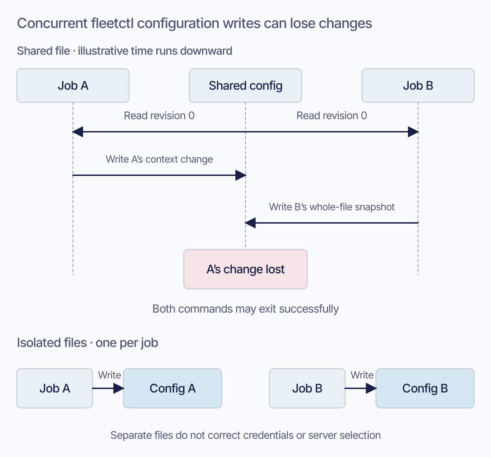
Proposed 2026-09-08; editorial brief, not technical re-verification. Replace the quoted whole-file race explanation with the visual and one operational instruction. Keep the list of context values and the risk of switching server and credential together. Keep current prose and this TODO until the actual image is reviewed. Then check alt text against the artwork and retain an accessible summary plus all required technical qualifications.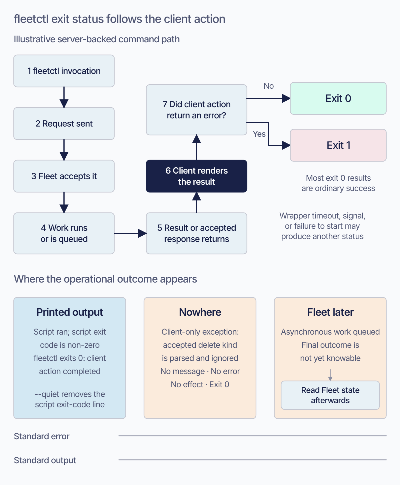
Candidate remains pending the final manual-wide review. Preserve the chapter’s technical qualifications and prose until artwork is accepted.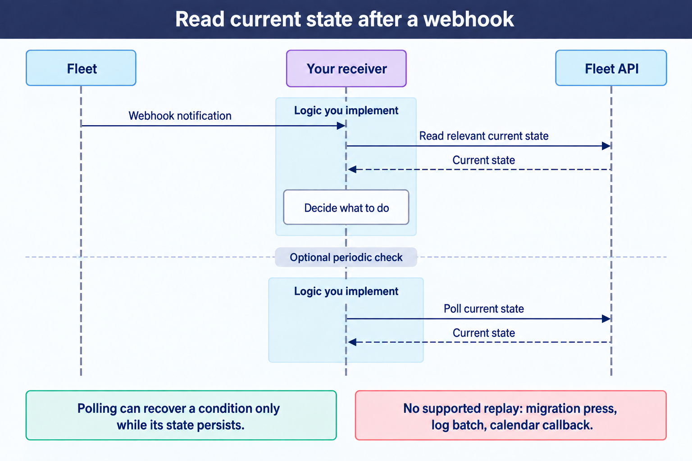
Brief revised 2026-09-08 following visual review. Editorial draft grounded in the current chapter and its existing ledger; this edit is not a new release verification. Before rendering, check every arrow, timing, scope qualifier, and selected transition against the chapter. Resolve any conflict before accepting the artwork. Preserve the current asset until its replacement is reviewed. Update alt text to describe the replacement when installed. Retain editable SVG when available. Change to IMAGE-OK only after rendered-image review.Compare the current book image
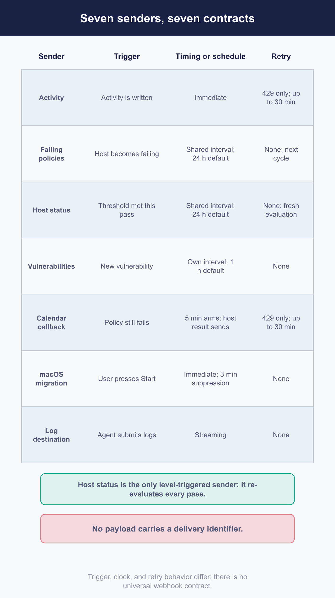
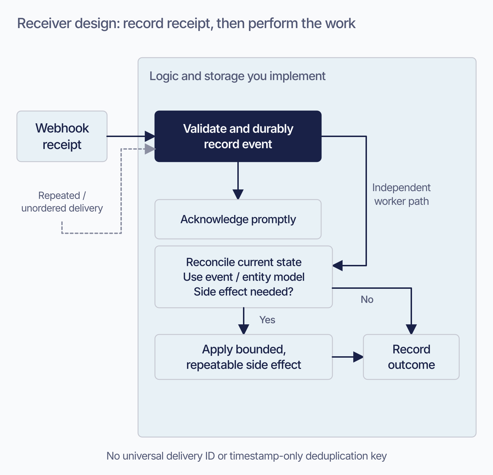
Proposed 2026-09-08; editorial brief, not technical re-verification. Replace the three numbered workflow principles with a short explanation and this architecture. Keep each sender's contract, key-selection caveats, and bounded API callback requirements. Keep current prose and this TODO until the actual image is reviewed. Then check alt text against the artwork and retain an accessible summary plus all required technical qualifications.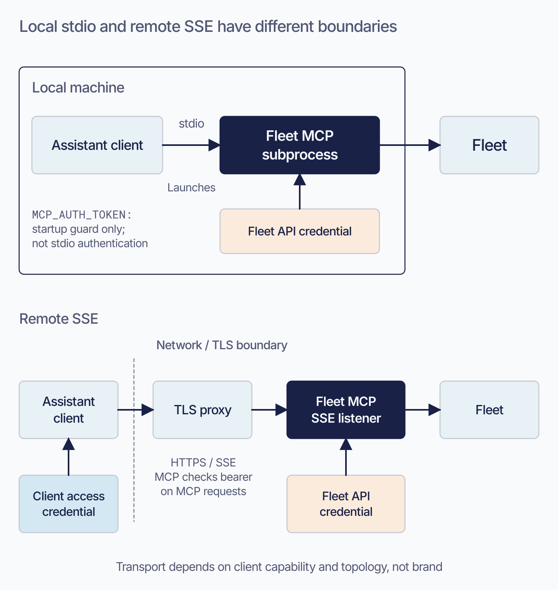
Proposed 2026-09-08; editorial brief, not technical re-verification. Reduce the transport-topology explanation. Retain the exact transport flag/typo behavior, startup verification, token-role guidance, and actual authentication setup. Keep current prose and this TODO until the actual image is reviewed. Then check alt text against the artwork and retain an accessible summary plus all required technical qualifications.